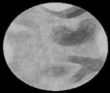

SJAA
Ephemeris
|
SJAA Ephemeris |
The Shallow SkyAkkana Peck |
Mars is past opposition now, but that's no reason not to take a look! The red (or orange, or brown, depending on who you talk to) planet is now high in the sky in the early evening, so even though it will shrink slightly from 14.3" to 11.5" this month, it will actually be easier to see detail on the planet without having to stay up late. It makes a nice naked-eye pattern with Spica in the southern sky. Instead of watching TV after dinner, why not roll out whatever scope you have (or get one from our loaner program if you don't have one), set it up in your yard or driveway, and see what you can see?
If you wait until the planet is high in the sky, even a 4.5" reflector or 80mm refractor will show some detail, and larger apertures will show more, especially on nights when the air is steady. Sinus Sabaeus/Meridiani, Acidalia Planitia, and the easy-to-see dark Syrtis Major and light Hellas should be rotating into view on late May/early June evenings. The northern polar cap still should be easy to see, though small (don't mistake it for Hellas, a much larger feature).
Remember, you can get Mars info and links at http://www.shallowsky.com/mars.html.
|  |
Meanwhile, Venus is having a wonderful showing and stays high in the sky remarkably late into the evening. By late June it finally begins to show a slightly crescent phase as it catches up with the earth and prepares to overtake us in its more rapid trip around the sun. On June 12th, it passes near M44, the Beehive cluster; this should be a pretty sight in binoculars or a wide-field 'scope. Four nights later, on the 16th, Venus and a slim crescent moon should make a nice pair. With a bigger telescope, try to see if you can detect any patterns in the shape of the clouds on the terminator or in the clouds on the lit portion of the disk. Some observers on the shallow-sky list have reported seeing detail, but these sort of sightings are hard to confirm or verify. Try using filters to dim the brightness of this very reflective planet. Let me know what you see!
Mercury chases after Venus back into our evening sky. During the month, it dims from negative magnitudes to magnitude .6, still rather bright, and since by the end of the month it doesn't set until an hour and a half after the sun, this will be an excellent month for Mercury watchers. To look for detail on the planet with a telescope, or just for the challenge of finding it with binoculars or the naked eye, try looking for it as soon as you can after sunset.
Pluto is in Ophiuchus, not far from its position last month. Use a finder chart or planetarium program to locate and identify the magnitude 13.7 speck; the chart in the RASC Observer's Guide is more reliable than most.
Jupiter and Saturn rise nearly together a few hours after midnight, Jupiter preceding the fainter ringed planet by a little less than an hour. They're at their best in the early morning sky. The smaller gas giants, Uranus and Neptune, are close together in Capricornus and can be observed in the late night and morning hours.
| Akkana Peck; last updated: February 05, 2002 | Prev Next |